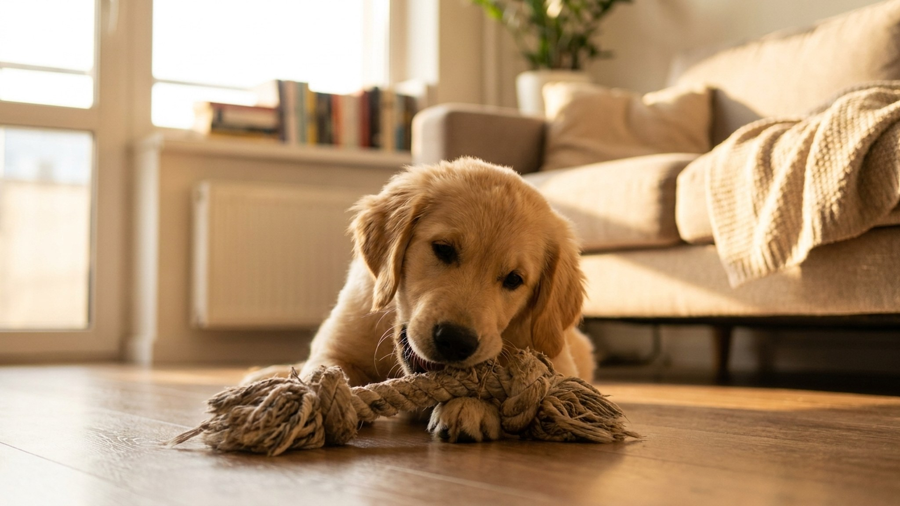

Щенок грызёт всё подряд: смена зубов в 3-7 месяцев — как пережить и что делать

2 июня 2026 · 8 минут чтения · Щенки
Угрызённый угол дивана, сжёванные наушники, дырка в ботинке — знакомая картина для каждого, кто завёл щенка. Это не «вредность» и не дефект воспитания. Это нормальная физиология: с 3 до 7 месяцев щенок теряет все 28 молочных зубов и получает 42 коренных. Дёсны болят и чешутся. Жевание — единственный способ облегчить дискомфорт. Задача хозяина — перенаправить эту потребность на безопасные объекты и пережить период с минимальными потерями.
Что происходит во рту щенка: хронология смены зубов
Молочные зубы у собак начинают прорезаться в 3-4 недели. К 6-8 неделям сформирован полный молочный комплект: 28 зубов (12 резцов, 4 клыка, 12 премоляров). Коренные зубы у собак не вырастают на месте молочных — они формируются рядом и буквально выталкивают молочные наружу.
Порядок смены по времени:
- 3-4 месяца: начинают выпадать резцы. Первыми — центральные, потом средние, потом угловые. Вы можете найти крошечные белые зубики на подстилке или вовсе не заметить — щенки часто их проглатывают (безопасно).
- 4-5 месяцев: смена клыков. Это самый болезненный этап — клыки имеют длинные корни. Именно в это время жевание становится интенсивным и даже агрессивным.
- 5-6 месяцев: смена премоляров.
- 6-7 месяцев: прорезаются коренные моляры — у молочного прикуса их не было совсем. К 7 месяцам у большинства пород полный взрослый прикус.
Тoy-породы (чихуахуа, йорки, мальтезе) часто запаздывают — полный взрослый прикус может формироваться до 10-12 месяцев.
Почему щенок грызёт именно ваши вещи, а не свои игрушки
Это не случайность и не издевательство. У щенка работает несколько механизмов одновременно:
- Запах. Ваши вещи пахнут вами — главным объектом привязанности. Для щенка это успокаивает. Ботинок пахнет хозяином — ботинок приятно грызть.
- Текстура. Дёсны чешутся по-разному на разных стадиях. Щенок ищет нужную текстуру методом перебора: кожа, ткань, резина, дерево.
- Исследование. До 6 месяцев рот — основной инструмент познания мира. Всё, что попадает в радиус доступа, должно быть опробовано зубами.
- Скука и избыток энергии. Щенок, которому не хватает прогулок и игр, направляет энергию на разрушение интерьера.
Понимание этих механизмов меняет подход: вместо наказания за «порчу» — устранение возможности и предоставление правильной альтернативы.
Безопасные игрушки и жевалки: что реально работает
Не все игрушки одинаково полезны. Для периода смены зубов нужны предметы с правильной твёрдостью — достаточно твёрдые, чтобы давать ощущение жевания, но не настолько твёрдые, чтобы сломать формирующиеся зубы.
- Kong Classic (натуральный каучук) — классика жанра. Подходит для всех размеров. Особенно эффективно: заполнить влажным кормом или пастой из творога и замороженных фруктов, заморозить. Замороженный наполнитель охлаждает воспалённые дёсны и продлевает интерес к игрушке до 20-30 минут.
- Замороженные морковки — самое доступное и безопасное решение. Морковь достаточно твёрдая в свежем виде, при заморозке становится идеальной жевалкой. Дать напрямую из морозилки. Размер — под размер породы (мини-породам: маленький кусочек, крупным — целый корнеплод).
- Лёд с бульоном — заморозить куриный бульон без соли и специй в форме для льда. Щенок с удовольствием грызёт, десны охлаждаются, занятость обеспечена на 10-15 минут.
- Nylabone (нейлоновые жевалки) — жёсткие нейлоновые кости разных размеров и ароматов. Хорошо переносятся большинством пород, не разрушаются на опасные куски. Выбирать по весу: на упаковке указан размер собаки.
- Benebone (нейлон с ароматизатором) — популярен у пород с сильным захватом (лабрадоры, ретриверы). Анатомически изогнутая форма удобна для самостоятельной игры.
- Жевалки из натуральной шкуры (Whimzees, Zylkene Dental) — мягче кости, хорошо подходят для периода смены зубов. При разжёвывании образуют пасту, а не острые осколки.
Охлаждение — ваш главный инструмент. Холод снимает воспаление и облегчает прорезывание. Любую подходящую игрушку перед предоставлением можно подержать в морозилке 30-60 минут.
Что категорически нельзя давать
Это важнее, чем список «правильных» игрушек — потому что неправильный выбор может привести к переломам зубов, травмам ЖКТ или закупорке кишечника.
- Палки и ветки — самая частая причина травм ротовой полости у щенков. Острые щепки проникают в дёсны, щёки, иногда в горло. Смотрится невинно, опасно реально.
- Варёные кости любых животных — при варке кость теряет структуру и при разгрызании раскалывается на острые иглы. Один такой осколок в кишечнике — экстренная операция.
- Сырые кости — для щенков в период смены зубов риск перелома молочного или формирующегося коренного зуба. Даже сырые кости достаточно твёрды для этого. Исключение: мягкие куриные шеи для мелких пород под наблюдением, но не для крупных.
- Рога оленя/лося — очень популярны в РФ, позиционируются как «натуральные». Но твёрдость рога превышает допустимый порог — это задокументированная причина переломов премоляров у щенков и молодых собак. Стоматологи-ветеринары не рекомендуют.
- Копыта и хрящи в крупных кусках — риск разломов на острые части. Мелкие продаются как снеки — ОК, но под контролем.
- Теннисные мячи — абразивная поверхность стачивает эмаль. Для разовой игры под контролем допустимо, для постоянного жевания нет.
- Игрушки меньше размера пасти — риск заглатывания целиком и кишечной непроходимости.
Как «щенокозащитить» квартиру на период смены зубов
Нет смысла наказывать щенка за жевание — это физиологическая потребность, а не нарушение правил. Разумное решение — убрать то, что жевать нельзя, и оставить то, что можно.
- Убрать обувь в закрытый шкаф или в недоступное место.
- Провода: убрать в кабель-каналы или за мебель. Провод под напряжением — смерть от электротравмы за долю секунды.
- Ножки мебели обработать горьким спреем (Anti Bite, Bitter Apple — продаются в зоомагазинах). Работает не всегда, но на 60-70% снижает интерес.
- Временно ограничить доступ в «опасные» зоны (закрытые комнаты, туалет, кладовка) манежем или закрытыми дверями.
- Принцип замены: щенок взял запрещённый предмет — спокойно заменяете его на разрешённую игрушку, хвалите за переключение. Многократное повторение формирует паттерн.
Когда к врачу: тревожные сигналы
Большинство случаев смены зубов проходит без ветеринарного вмешательства. Но есть ситуации, которые требуют осмотра:
- Задержавшиеся молочные зубы (персистирующие) — если к 6-7 месяцам молочный зуб ещё стоит рядом с выросшим коренным, они не выпали сами. Это самая частая проблема у той-пород (йорки, чихуахуа, мальтезе). Два зуба в одном месте нарушают прикус и создают карманы для скопления налёта. Молочный зуб нужно удалить хирургически, чаще под общим наркозом.
- Сильное кровотечение из дёсен — капля крови на игрушке норма, струя из пасти нет.
- Щенок резко перестал есть твёрдую пищу — возможна боль от застрявшего или сломанного зуба.
- Отёк морды, асимметрия челюсти — зубная инфекция, требует антибиотиков и хирургии.
- К 9 месяцам зубы не сменились полностью — нарушение прорезывания, нужна рентгенография челюстей.
Что НЕ делать при смене зубов
Не наказывать щенка физически за жевание — боль и страх в этом возрасте формируют стойкие поведенческие нарушения. Не кричать «нельзя» и не уходить обиженным: щенок не понимает связи между жеванием и вашей реакцией, если она происходит позже чем через 2 секунды после действия. Не лишать щенка возможности жевать вовсе — это такая же потребность, как еда и сон. Не затягивать с визитом к врачу при персистирующих молочных зубах: чем дольше они стоят, тем хуже прикус и тем сложнее коррекция.
Период смены зубов — один из самых интенсивных этапов жизни щенка и его хозяина. Он длится 3-4 месяца и заканчивается. Пережившие его с минимальными разрушениями обычно вспоминают с улыбкой. Правильно подобранные жевалки, охлаждение и терпение делают этот период управляемым.
← Все статьи · Открыть AnimaLife в Telegram · RSS